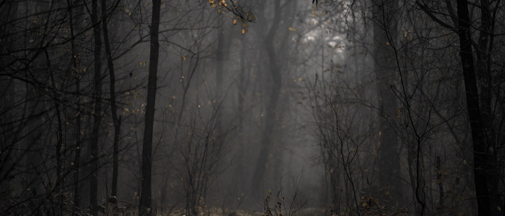

Photography is the result of combining several technical discoveries, relating to seeing an image and capturing the image. The discovery of the camera obscura ("dark chamber" in Latin) that provides an image of a scene dates back to ancient China. Greek mathematicians Aristotle and Euclid independently described a camera obscura in the 5th and 4th centuries BCE.[11][12] In the 6th century CE, Byzantine mathematician Anthemius of Tralles used a type of camera obscura in his experiments.[13] The Arab physicist Ibn al-Haytham (Alhazen) (965–1040) also invented a camera obscura as well as the first true pinhole camera.[12][14][15] The invention of the camera has been traced back to the work of Ibn al-Haytham.[16] While the effects of a single light passing through a pinhole had been described earlier,[16] Ibn al-Haytham gave the first correct analysis of the camera obscura,[17] including the first geometrical and quantitative descriptions of the phenomenon,[18] and was the first to use a screen in a dark room so that an image from one side of a hole in the surface could be projected onto a screen on the other side.[19] He also first understood the relationship between the focal point and the pinhole,[20] and performed early experiments with afterimages, laying the foundations for the invention of photography in the 19th century.[15] Leonardo da Vinci mentions natural camerae obscurae that are formed by dark caves on the edge of a sunlit valley. A hole in the cave wall will act as a pinhole camera and project a laterally reversed, upside down image on a piece of paper. Renaissance painters used the camera obscura which, in fact, gives the optical rendering in color that dominates Western Art. It is a box with a small hole in one side, which allows specific light rays to enter, projecting an inverted image onto a viewing screen or paper. The birth of photography was then concerned with inventing means to capture and keep the image produced by the camera obscura. Albertus Magnus (1193–1280) discovered silver nitrate,[21] and Georg Fabricius (1516–1571) discovered silver chloride,[22] and the techniques described in Ibn al-Haytham's Book of Optics are capable of producing primitive photographs using medieval materials.
Glass plates were the medium for most original camera photography from the late 1850s until the general introduction of flexible plastic films during the 1890s. Although the convenience of the film greatly popularized amateur photography, early films were somewhat more expensive and of markedly lower optical quality than their glass plate equivalents, and until the late 1910s they were not available in the large formats preferred by most professional photographers, so the new medium did not immediately or completely replace the old. Because of the superior dimensional stability of glass, the use of plates for some scientific applications, such as astrophotography, continued into the 1990s, and in the niche field of laser holography, it has persisted into the 21st century.